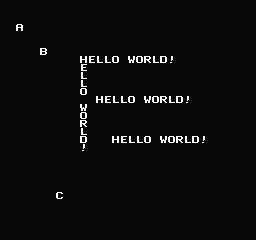

03、VRAM缓冲区
我写了一些支持函数来填充VRAM缓冲区。
我使用了一些后台场景的代码，在crt0.s中定义了一个VRAM_BUF，地址是 $700。
请注意，这在技术上与C堆栈共享700-7ff空间。他们可能会发生冲突。如果你担心这个问题请将VRAM缓冲区设置为600-6ff。
但是你不能向VRAM缓冲区写入超过74 bytes，这样就不会比77 bytes更多了。
C堆栈从7ff开始增长。并且，C堆栈只需要十几个字节，如果你像我一样编程，并且不使用局部变量，并且一次只传递几个函数（最好是没有），并且不使用递归。如果你做那些事情，你会没事的。但是，我想我应该让你知道。
要使用我的系统，您需要指向我的系统的一些内部指针。这不需要传递值，该地址由crt0.s中的VRAM_BUF定义。
set_vram_buffer()
这有点像set_vram_update()。
要将PPU更新指向另一个数据集，您可以使用set_vram_update(&data)
关闭可以使用set_vram_update(NULL)
您需要做的另一件事是每帧重置缓冲区。
clear_vram_buffer()
当您写入缓冲区时，它会记住它所在的位置，并且会继续增长。clear_vram_buffer()会将索引重置为零。
数据在帧之间自动传输，因此在ppu_wait_nmi()之后，数据已经发送，我们就可以清除它了。
缓冲单个贴图
one_vram_buffer(tile, ppu_address)
你只需要瓷砖编号和地址。这个宏可以得到地址 NTADR_A(x,y)
X和Y是平铺位置。X从0到31，Y从0到29。
您还可以使用我编写的函数在运行时计算地址
像素点 0-255 X, 0-239 Y
NT是nametable，0-3 （备注：也就是4块显示屏）
get_ppu_addr(char nt, char x, char y);
你可以写一个连续的运行
multi_vram_buffer_horz(const char * data, unsigned char len, int ppu_address);
或
multi_vram_buffer_vert(const char * data, unsigned char len, int ppu_address);
Horz 从左到右，Vert从上到下
地址、数据、EOF被复制到VRAM缓冲区，其中一个优点是，当持续写入缓冲区的时候，EOF会自动调整。
但是这里有个需要注意的问题，缓冲区的大小没有监控，如果你不小心写多了（溢出缓冲区），就会出问题了（花屏、乱码、不对齐、崩溃）
我写了很写屏幕的例子，而且这些都是在一个 v-blank 期间完成的。这几乎是你在一帧中可以可以改变的最大数量。

https://github.com/nesdoug/03_Hello3/blob/master/hello3.c
https://github.com/nesdoug/03_Hello3